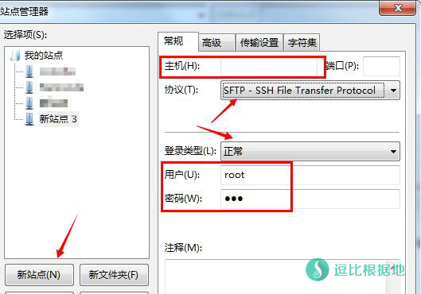
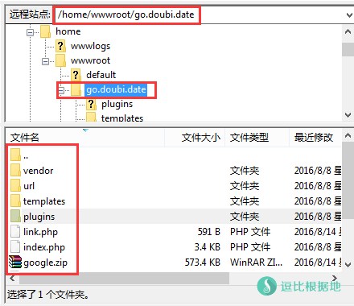
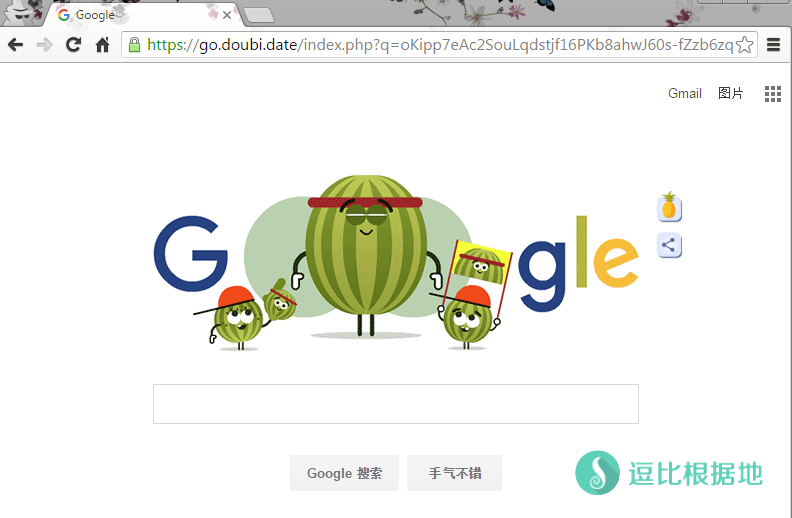

在逛 破站 论坛的时候，在源码区发现了这个PHP反向代理Google的源码，感觉就优势而言，还是不错的，就写个简单的教程吧！
目前 PHP反向代理谷歌 效果不如以前，防火墙针对性更强，如非必须，不推荐使用！
简介
这种反向代理方法很简单，并不是网上很多的Nginx反向代理，而是利用PHP来实现反向代理，所以说，只要安装LNMP，然后扔到 虚拟主机里就行了。
适用于 仅使用Google搜索的用户，最低成本不要去，直接搞一个免费的虚拟主机（推荐我朋友的免费主机 87主机），上传代码后就能使用了！
演示网址：http://g.115.tf
安装
准备工具
- 一个安装好了 LNMP环境 或者 虚拟主机面板 的VPS，也可以直接是购买的 虚拟主机。
- 一个SSL证书和密匙（可选，加密用的，避免被墙）
- 有最基础的建站经验（一些最基础的步骤我就不再写了）
安装LNMP环境
如果你已经安装了 LNMP环境 或者 虚拟主机面板，或者购买现成的 虚拟主机，那就可以跳过这一步。
注意：以下教程以 LNMP一键包 为例。
如果你是一个VPS，那么你需要安装LNMP环境，我这里推荐 军哥的一键LNMP安装包。
安装完毕之后，通过这个教程去 添加虚拟主机。
然后设置域名解析。
上传源码
以下教程我以 域名：go.doubi.date 为例。
然后就是上传源码到你的 虚拟主机文件夹了，比如我的虚拟主机文件夹就是 /home/wwwroot/go.doubi.date
源码下载地址：逗比 · 云
有两种方式 上传源码：
一种是下载源码到本地，然后通过SFTP协议链接VPS然后上传（我推荐使用filezilla，功能还是很强大的！）
另一种就是 使用 putty 或者 Xshell 通过ssh协议链接VPS，然后下载到 虚拟主机文件夹。
我比较推荐第二种，反正后面还要链接ssh去解压源码和其他操作。
通过SFTP上传源码
打开FTP软件，打开 文件（菜单栏）——站点管理器，然后点击 新站点，然后输入 主机IP 和 SSH端口（默认为空是 22），然后选择协议：SFTP，下面选择登陆协议为：正常，用户是root，密码root的密码。然后链接SFTP。

找到你的 虚拟主机文件夹，把上面下载的源码文件不解压（在线解压更快），直接上传到 虚拟主机文件夹中。

然后使用 Putty 或者 Xshell 通过SSH链接VPS，然后进入 虚拟主机文件夹 并解压（以下代码皆为 示例）。
cd /home/wwwroot/go.doubi.date unzip google-proxy.zip
这时候就已经安装完成了。直接访问你的域名，就可以看到Google了！
没错！这就完了，不过建议你加上SSL证书加密（https），这样不容易被墙。
配置SSL + 防止搜索引擎收录
首先你要有SSL证书和密匙，然后把他们上传到 /root 文件夹，分别取名为 ssl.crt 和 ssl.key 。
然后找到你的 虚拟主机配置文件 ，我的是在 /usr/local/nginx/conf/vhost/go.doubi.date.conf
在 listen 80; 下面添加这几行，开启SSL。
ssl_certificate 是SSL证书文件地址
ssl_certificate_key 是SSL密匙文件地址
listen 443 spdy;
ssl on;
ssl_certificate /root/ssl.crt;
ssl_certificate_key /root/ssl.key;
ssl_session_cache shared:SSL:10m;
ssl_session_timeout 10m;
然后就要设置搜索引擎防收录了，
还是加上这句代码到 虚拟主机的配置文件中，具体看下面的 虚拟主机配置文件示例。
if ($http_user_agent ~* (baiduspider|googlebot|soso|bing|sogou|yahoo|sohu-search|yodao|YoudaoBot|robozilla|msnbot|MJ12bot|NHN|Twiceler)) {
return 403;
}
这时候你的域名是可以访问http和https两种，为了保险建议不使用http，强制重定向为https，在 虚拟主机配置文件 中加入下面代码，具体看下面的 虚拟主机配置文件示例。
if ( $scheme = http ){
return 301 https://$server_name$request_uri;
}
完整虚拟主机配置文件示例
server
{
listen 80;
listen 443 spdy;
ssl on;
ssl_certificate /root/ssl.crt;
ssl_certificate_key /root/ssl.key;
ssl_session_cache shared:SSL:10m;
ssl_session_timeout 10m;
server_name go.doubi.date;
index index.html index.htm index.php default.html default.htm default.php;
root /home/wwwroot/go.doubi.date;
if ( $scheme = http ){
return 301 https://$server_name$request_uri;
}
if ($http_user_agent ~* (baiduspider|googlebot|soso|bing|sogou|yahoo|sohu-search|yodao|YoudaoBot|robozilla|msnbot|MJ12bot|NHN|Twiceler)) {
return 403;
}
include none.conf;
#error_page 404 /404.html;
location ~ [^/]\.php(/|$)
{
# comment try_files $uri =404; to enable pathinfo
try_files $uri =404;
fastcgi_pass unix:/tmp/php-cgi.sock;
fastcgi_index index.php;
include fastcgi.conf;
#include pathinfo.conf;
}
location ~ .*\.(gif|jpg|jpeg|png|bmp|swf)$
{
expires 30d;
}
location ~ .*\.(js|css)?$
{
expires 12h;
}
access_log off;
}
虚拟主机配置文件都修改完毕后，就重启Nginx。
lnmp nginx restart
当然还有一个步骤就是设置 robots.txt 文件。
新建一个 名为 robots.txt 的文本文件，然后把下面的代码复制进去保存并上传到 虚拟主机文件夹 根目录。
Disallow: /plugins/ Disallow: /templates/ Disallow: /url/ Disallow: /vendor/ User-agent: *
大功告成
所有都做完的话，你打开你的域名，就能看到下面的Google搜索页面了！

源码提供来源：破站论坛 http://www.sthez.com/thread-436-1-1.html
转载请超链接注明：逗比根据地 » 一种简单利用 PHP 来反向代理 Google搜索的方法
责任声明：本站一切资源仅用作交流学习，请勿用作商业或违法行为！如造成任何后果，本站概不负责！